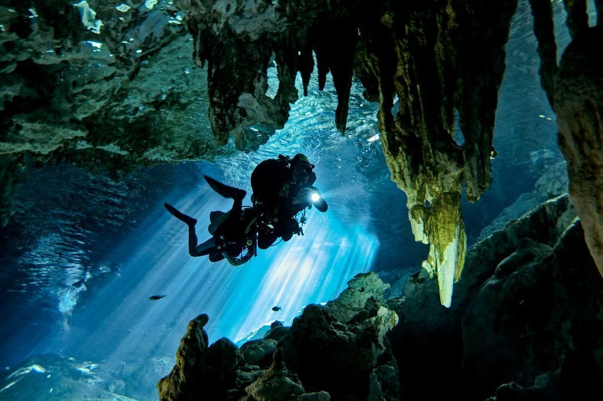

COSTA RICA
BELIZE
GUATEMALA

PANAMA

CANADA
MEXICO
UNITED STATES

CUBA

BAHAMAS
GREANADA
Discover New Places
Popular destinantion
Planning a vacation around the world? Whether you’re craving a city break, a few days of adventure, or a total escape into nature, we’ve got you covered. Here are countless popular places around the world, each offering unique experiences!
COSTA RICA
Manuel Antonio National Park
Some of the usual wildlife sightings in the park are howler monkeys, squirrel monkeys, sloths, white-nosed coatimundis, and the hard-to-miss capuchins. You can also expect to see iridescent butterflies and a myriad of colorful birds flitting about. You can walk the trails on your own, but for a more in-depth experience consider joining a guided tour of Manuel Antonio Park Nature. Guides often know exactly where the animals are and carry tripods and telescopes, ideal for wildlife viewing and photography.
Arenal Volcano
The Arenal Volcano National Park, found in the rugged Cordillera de Tilarán, is one of the top volcano viewing areas in the country. The main attraction here is the Arenal Volcano, a cone-shaped mountain with huge ash columns frequently streaming from the crater.
Monteverde and the Cloud Forests
The Cloud Forests near Monteverde and Santa Elena are some of the best places to visit in Costa Rica for ecotourism. If you are itching to immerse yourself in nature and see unique plants and wildlife w
Tamarindo
If you're looking for an action-packed beach town to settle in to for a while, Tamarindo is just the place. Located on the Nicoya Peninsula in Guanacaste, Tamarindo is a top destination for surfing, beaching, and fun. Once a quiet fishing village, the town has grown into a tourist haven, where you can find a good assortment of restaurants and hotels.
Dominical
Dominical is a tropical backpacker's haven and one of the best places in Costa Rica for surfing. Lovely beaches, cheap accommodation, casual open-air restaurants, and a great bohemian vibe are what this town has long been known for. But, in the surrounding mountains, resorts, small inns, and luxury rentals attract an upper-end crowd.
BELIZE
Caye Caulker
Located just a few miles off the coast of Belize City, Caye Caulker is a popular stop for travelers seeking more budget-friendly alternatives to Ambergris Caye.

Ambergris Caye
If diving and snorkeling are on your things to do list, head off the coast here to the Hol Chan Marine Reserve. It's named after the Mayan for "little cut" and is one of seven reserves within the Belize Barrier Reef system, which is the second largest in the world after Australia's Great Barrier Reef. Top attractions in the reserve include a cut in the reef with steep coral walls; Cat's Eye, a crescent-shaped sinkhole; and Shark Ray Alley, where divers can enjoy close encounters with nurse sharks and southern stingrays

Placencia Peninsula
In the village, brightly colored clapboard houses raised on stilts line the narrow concrete path where fishermen used to transport fish in wheelbarrows. Near Placencia, Laughing Bird Caye National Park is another protected area of the Belize Barrier Reef Reserve System. Swimming, snorkeling, sea kayaking, and diving are popular things to do here.

Turneffe Islands Atoll
A paradise for divers and anglers, Turneffe Islands Atoll encompasses more than 200 mangrove islands surrounding a lagoon. It is one of three atoll reefs in Belize's waters.

Cockscomb Basin Wildlife Sanctuary
Cockscomb Wildlife Sanctuary is a haven for nature buffs. The mountainous tropical forest here protects an impressive array of wildlife, including jaguars, ocelots, pumas, anteaters, tapirs, monkeys, and snakes, although sightings of the cats are rare. Birders will also love it here. The preserve has recorded sightings of more than 300 avian species, including toucans and scarlet macaws.
GUATEMALA
Mayan Ruins of Tikal
In the humid jungle of northern Guatemala, near the border of Belize, stands one of the greatest archaeological sites in Central America. The well-preserved ruined city of Tikal is one of the best places to visit in Guatemala to learn about Mayan culture.
Antigua Guatemala
Is one of the highlights of Guatemala and certainly one of the most beautiful cities in Central America. Surrounded by three volcanoes, this former capital of Guatemala offers a unique glimpse of a city unblemished by modern day concrete buildings and high-rises.If you're looking for a city to settle in for a bit, this is the place to come. With Quality hotels at reasonable rates, trendy restaurants serving excellent food, and plenty of things to do, it's easy to fill your days here.
Lake Atitlán
Often described as the most beautiful lake in the world, Lake Atitlán is another destination where travelers tend to linger. Make the journey here and you won't be disappointed. You can easily spend a week or more sightseeing in the small towns and villages that ring the lake.

Chichicastenango Market
Isolated Chichicastenango, known locally as "Chichi," is a large town surrounded by valleys and mountains. The sleepy cobblestone streets come alive on Thursdays and Sundays, as it hosts one of the largest and most hectic markets in Guatemala. This is a locals' market, selling regular everyday goods, vegetables, and the distinctive textiles for which it is so famous. Vendors come from miles around for this market, making it a great opportunity for people watching and photography.

Quetzaltenango
uetzaltenango, Guatemala's second-largest city, is the commercial center of southwestern Guatemala. More commonly called Xela, the town's major sights are the Parque Centro América and the Neoclassical buildings surrounding it. Most of these buildings, apart from the cathedral, stem from the era in the 19th century when Xela was a major trading and artistic community.
PANAMA
Panama Canal
Panama's most famous attraction is by far the Panama Canal, connecting the Atlantic and Pacific Oceans. Watching a massive ship, piled high with colorful containers, gliding quietly into the locks reveals the true enormity of this great feat of engineering. Taking a boat tour through the canal gives you even more perspective.

Bocas Del Toro
Bocas del Toro is Panama's main beach destination in the Caribbean. This collection of low-lying tropical islands, not far from the border with Costa Rica, is known for its outstanding soft-sand beaches lapped by crystal-clear, azure-colored waters.The atmosphere here is beyond relaxed, with many young travelers coming to the area and, in some cases, staying for months or years. Things to do in Bocas del Toro include surfing, swimming, diving, or just lazing on the beach. Activities are generally cheap.
Punta Duarte on the Sunset Coast
One of the very few places in Panama where you can watch the sunset over the Pacific Ocean, the Sunset Coast is an undiscovered area with small towns, wide open beaches, and a small number of lodges and inns where you can get away from the tourist scene.
Boquete
The mountain town of Boquete has a wonderful climate, where you can escape the sometimes oppressive heat of the coast and lower areas. The town is relaxed and safe, catering to expats and people escaping the winters in northern climates, and local Panamanians looking for a weekend getaway.
Casco Viejo
History surrounds you as you stroll through the narrow streets of Casco Viejo, also known as the Old Town. See colorful buildings, historic ruins, and great views out over the bay towards the gleaming towers of modern Panama City. This area is compact, and all the sights are within an easy stroll of one another.
CANADA

Niagara Falls
Niagara Falls is Canada's most famous natural attraction, bringing in millions of visitors each year. Located just over an hour's drive from Toronto, along the American border, these massive falls drop approximately 57 meters. You can see the falls at an astoundingly close distance from several key points.
Lake Louise and the Victoria Glacier
The jewel of the park is Lake Louise, where green waters reflect the surrounding mountains and glaciers, and visitors can stroll easily around the shores. Just a short distance is Moraine Lake, another impressive alpine lake with an even slightly more dramatic surrounding
CN Tower
One of Canada's most famous landmarks. The tower stands an impressive 553 meters high and dominates the skyline.At the top, you can find fine dining in the revolving 360 restaurant, and enjoy a meal while looking out over the city and lake. The LookOut and the Glass Floor offer beautiful views out over the entire area. For an added thrill, consider stepping outside of the enclosed area onto the metal walkway for the CN Tower Edgewalk. You'll be harnessed in and then be able to walk around the building, 116 stories or 356 meters (1,168 feet) above the ground below.
Old Quebec
Old Quebec is one of Canada's most popular historical areas and is well developed for tourism. In addition to the historical sites, other highlights include artists displaying their works on Rue du Trésor; interesting museums, like the Musée de la Civilisation; and unique shops and restaurants.
Whistler Mountain
Just a two-hour drive from Vancouver is the famous ski resort of Whistler Blackcomb and the year-round resort destination of Whistler. While Whistler has always been an important winter sports area, it has also developed into a popular summer destination, with golf, mountain biking, and a lively town atmosphere no matter when you visit.
MEXICO

Cenote Dos Ojos
Just outside of Tulum is Cenote Dos Ojos, one of the country’s largest underwater cave systems. The name means the cavern of two eyes, referring to the two sinkholes connected by a long passageway. The water in the caverns is filtered through limestone, making it exceptionally clear. As a result, Cenote Dos Ojos is wildly popular with both snorkelers and more serious scuba divers, some of whom head deep into the underwater cavern
Catedral Metropolitana
There is no shortage of things to do, see and explore in Mexico City, but a top attraction is unquestionably the Catedral Metropolitana. It is the oldest and the largest cathedral in Latin America, and the 16th century structure dominates the city’s central plaza, known as the Zocalo. The architecture is a blend of styles, including heavy influences from baroque and Mexican churrigueresque design. In addition to the architecture, the Catedral Metropolitana boasts an extensive art collection as well as catacombs beneath the main structure
Guanajuato
Nestled in the mountains of the Sierra de Guanajuato lies the beautiful colonial city of Guanajuato. The city was founded in 1554 next to one of the richest silver mining areas of Mexico. The 16th-century mining boom led to the construction of beautiful haciendas and fine colonial buildings.
Dias des los Muertos
The city of Oaxaca is well-known for having one of the best Dia de Los Muertos festivals in Mexico, a holiday celebrated in many parts of Latin America. In Mexico the festival can be traced back thousands of years ago to indigenous cultures such as the Zapotec and Aztec. In Oaxaca the Day of the Dead Festival starts at the end of October when families prepare the tombs for the return of the spirits. During this time tombs and home altars are decorated with flowers and families leave offerings for the spirits in the cemeteries.
Cozumel
Located just off the Yucatan Peninsula, Cozumel is a popular destinations for scuba diving and snorkeling. The underwater world around Cozumel was discovered by Jacques Cousteau in 1959 who called it one of the best diving areas in the world. Since that time Cozumel has become a National Marine Park to protect the delicate balance of it’s beautiful coral reefs and amazing variety of tropical fish.
UNITED STATES

Times Square
Times Square is one of the most iconic and bustling places in the world. It's known for its bright lights, towering skyscrapers, and bustling crowds. Times Square is a must-see for any visitor to New York City, and it's especially popular during the New Year's Eve celebrations.

Walt Disney World Resort
Walt Disney World is the world's most popular theme park resort. It's located in Orlando, Florida, and it features four theme parks, two water parks, and several resort hotels. Walt Disney World is a great place to visit for families with children, but it's also popular with adults of all ages.

Central Park
Central Park is an oasis in the middle of Manhattan. It's a great place to escape the hustle and bustle of the city and enjoy some peace and quiet. Central Park offers a variety of activities for visitors, including walking, biking, boating, and picnicking. There are also several museums and attractions located within the park.
Niagara Falls
Niagara Falls is one of the most awe-inspiring natural wonders of the world. It's located on the border between the United States and Canada, and it's a popular tourist destination for people from all over the globe. Visitors can take a boat tour to get up close to the falls, or they can simply stand back and admire the view.
Grand Canyon National Park
The Grand Canyon is another must-see natural attraction in the USA. It's one of the largest and deepest canyons in the world. As a result, it's a truly breathtaking sight. Visitors can hike, bike, or drive along the rim of the canyon, or they can take a mule ride down into the canyon.
CUBA

Plaza Vieja
Habana Vieja or Old Havana is a well-preserved slice of Cuban history. Strolling around the cobbled streets and gazing up at the grand Baroque and neoclassical buildings, it's easy to imagine what life in Cuba was like 200 years ago. Extensive renovations are now breathing new life into the historic buildings. Major attractions here include the Plaza de la Catedral, home to the Cuban Baroque Catedral de San Cristobal; the legendary restaurant and Hemingway hangout, Bodeguita del Medio; and the military fortress, Castillo de la Real Fuerza.
Varadero
Varadero is one of Cuba's most famous beach destinations, and home to one of the best beaches in the Caribbean. It stretches along the Peninsula de Hicacos, which juts into the sea off the north coast; a drawbridge connects it to the mainland. More than 50 beach resorts line this popular palm-fringed strip, and its magnificent white-sand beaches draw visitors from around the world.
Trinidad
Exploring the town of Trinidad, Cuba, a UNESCO World Heritage Site, is like stepping back in time. The beautifully restored buildings and cobblestone streets in the city center exude a quaint colonial feel. Much of the architecture dates from the 17th to the 19th centuries, when Trinidad prospered from both the sugar and slave trades.
Guardalavaca
Rimmed by glittering beaches, Guardalavaca, in the Holguin province, is quieter and more remote than Varadero. Lush foliage fringes the sweeping strand of beach here, providing plenty of shady patches for those seeking respite from the tropical sun. Divers and snorkelers can explore a plethora of sea life along the coral reefs.
Playa Paraíso
In a country known for its beautiful beaches, Playa Paraíso (Paradise Beach), on the island of Cayo Largo del Sur, is one of Cuba's best. This sublime strand of powdery white sand and baby blue sea skirts the sheltered western edge of the island and merges with the equally ravishing Playa Sirena.
BAHAMAS
Atlantis Paradise Island
Dominating the skyline on Paradise Island, this splashy, salmon-pink resort evocatively recreates the legend of Atlantis in a luxury hotel, entertainment complex, aquarium, and water park. It's one of the top resorts in the Bahamas. Guests at the hotel score free entry into the popular 141-acre Aquaventure. Spending a day at this whimsical waterscape is one of the most popular things to do in Paradise Island. Whiz down high-speed slides like the Leap of Faith, splash around in more than 20 swimming areas, or lie back and relax as you cruise along the Lazy River Ride.
Exuma Cays Land and Sea Park
Has some of the most striking seascapes in the Bahamas. Luminous water in shades of electric blue merges with bone-white sand, creating a dazzling backdrop for a range of water sports. Located in the remote eastern edge of the Bahamas, the park is a no-take-zone and marine protected area, the first of its kind in the Caribbean. The area is popular with divers and boaters, who come here for the quality anchorages, abundant marine life, and crystal-clear waters. On a good day, divers and snorkelers can enjoy 30-meter-plus visibility.
Harbour Island
Pretty Harbour Island sits northeast of its big sister, Eleuthera and has long been a hideaway for the rich and famous. Affectionately known by the locals as "Briland," it's one of the oldest settlements in the Bahamas, as well as the site of the first Bahamian parliament. English Loyalists settled here in the 1700s, and their cute pastel-hued cottages evoke a bygone era in Dunmore Town, the island's only settlement, where golf carts rule the narrow streets.

Grand Bahama Island
The northernmost of the Bahamian islands, Grand Bahama Island is a popular destination for package tourists and cruise ships. The capital, Freeport, is the second biggest city in the Bahamas, though Port Lucaya has now replaced it as the tourist hub for attractions like shopping, dining, and entertainment.
Marine Habitat
In the marine habitat at Atlantis Bahamas, hammerhead sharks and swordfish swim through sparkling open-air pools. You'll also find plenty of shops, restaurants, and entertainment venues here. The fantasy sea theme continues throughout all the Atlantic attractions, capturing the imagination of young and old alike.
GRENADA
Grand Anse Beach
Water hues range from clear turquoise in the shallows to deep cobalt blue, and the calm waters are perfect for swimming. Many hawkers patrol the sands, but a polite "No, thank you" will keep them at bay. If you feel like indulging in a little shopping, midway along the beach is the Grande Anse Craft and Spice Market, another popular stop for cruise ship visitors who are searching for something special to take home.

Grenada Underwater Sculpture Park
Divers, snorkelers, and glass-bottom boat passengers can admire this underwater exhibition, although coming face-to-face with these sculptures below sea level is the best way to appreciate their artistry. Visiting this one-of-a-kind attraction is one of the most memorable things to do in Grenada. Be sure to pack a waterproof camera to get shots of the unique finds and colorful fish you'll see during your adventure.

St. George's
One of the prettiest port towns in the Caribbean, St. George's curves along a horseshoe-shaped harbor backed by volcanic hills. This colorful capital of Grenada is popular with boaters, who dock in the busy harbor, called the Carenage. Brick and stone buildings with red-tiled roofs line the streets, where locals sell spices and crafts.
Carriacou
While not technically on Grenada, the island of Carriacou (carry-a-cou), also known as the "Land of Reefs," is a beautiful day trip destination. This pretty isle lies just northeast of Grenada, an easy, 90-minute boat trip away. It is one of the most popular places to visit when on vacation in Grenada, which is why it makes our list of the area's best attractions.

Fort George
Built in 1705 by the French, Fort George lies on the promontory to the west of the harbor and is Grenada's oldest fort. It was built to protect the harbor, but stands mostly derelict today. The main draw here is the spectacular 360-degree view across the town's red-tiled roofs and church spires to the harbor and sea beyond. You'll also spot a few of the original cannons, which are still fired on special occasions. The police headquarters currently sit on a section of the property.